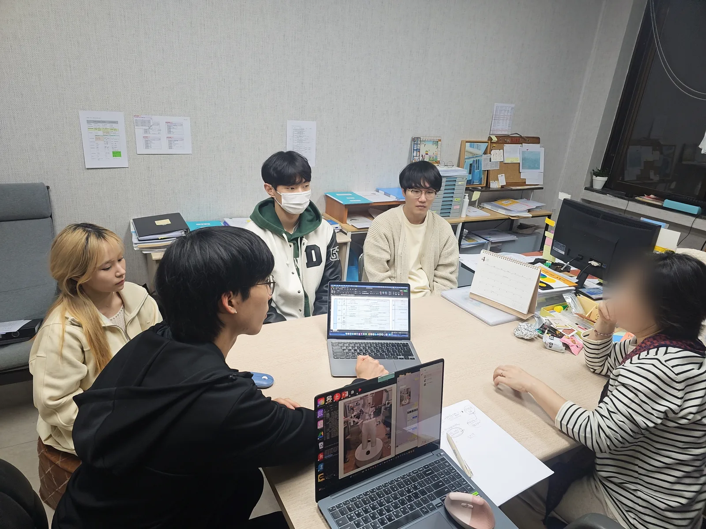
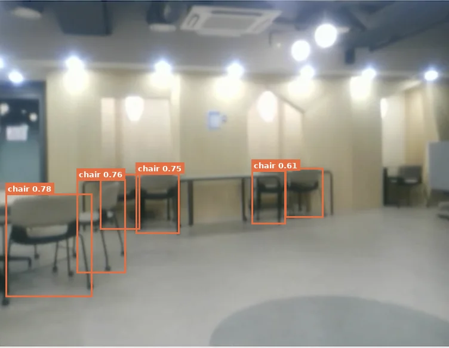
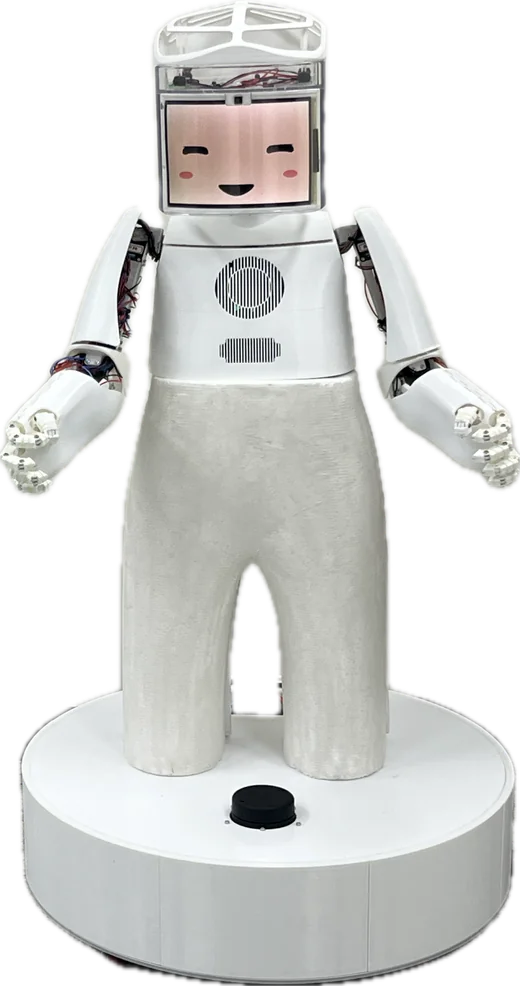
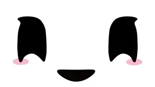
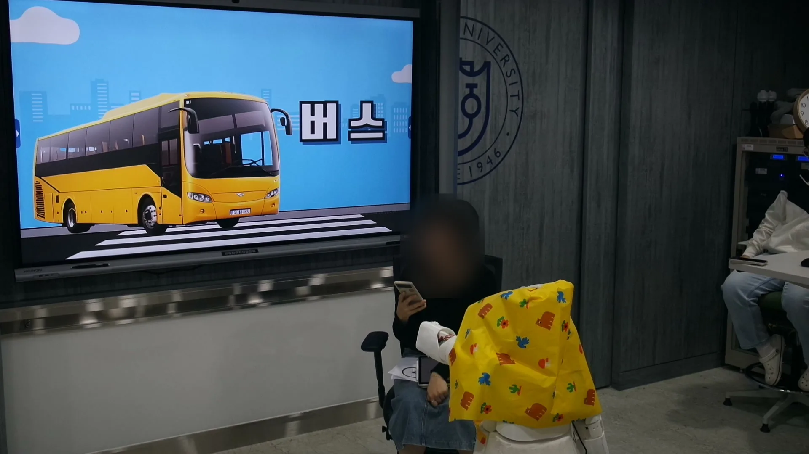
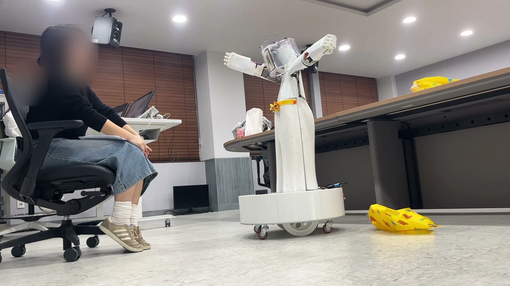
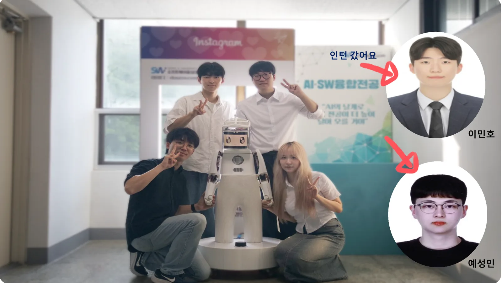

예비교사가 실제 아이와 대화하듯
수업을 연습하는 AI 로봇An AI robot that lets student teachers in early childhood education practice as if talking with a real child
예비 유아교사의 모의수업은 대부분 학생들이 돌아가며 아이 역할을 맡는 방식으로 진행됩니다. 수업 계획을 아는 성인은 예상한 대로만 반응하기 때문에, 실제 현장에서 마주칠 엉뚱한 대답이나 돌발 행동을 미리 연습하기 어렵습니다.In most mock lessons for student teachers in early childhood education, classmates take turns playing the children. Adults who know the lesson plan respond as expected, so there is little chance to rehearse the unexpected answers and behavior of real children.
한 대학 유아교육과 사례 · 「열린유아교육연구」One university's early childhood education department · Open Early Childhood Education Research

YOMI는 예비교사가 말을 걸 때, 몸을 만질 때, 한동안 말이 없을 때 반응합니다. 그동안 카메라는 늘 주변 사물을 인식하고, 이 정보도 함께 대화 모델로 전달됩니다. 대화 모델이 고른 대답과 감정은 목소리·표정·팔 동작으로 함께 나타납니다.YOMI responds when the teacher speaks, touches it, or stays silent for a while. All the while, its camera keeps recognizing objects around it, and that information goes to the dialogue model too. The reply and emotion the model chooses come out together as voice, facial expression and arm motion.


예비교사의 말을 음성 인식으로 받아 적으면, 유아 말투로 학습한 대화 모델이 대답과 감정을 정하고, 아이 음색으로 학습한 음성 합성 모델이 대답을 읽습니다.Speech recognition transcribes what the teacher says, an LLM tuned to talk like a young child chooses a reply and an emotion, and a speech synthesis model trained on a child's voice reads the reply aloud.
머리·등·양팔·양손에 단 터치 스위치 6개로 어디를 만졌는지 알아냅니다. 만진 부위는 대화 모델에 전달되고, 상황에 따라 다른 대답과 표정이 나옵니다.Six touch switches on the head, back, arms and hands tell YOMI where it was touched. The touched part is passed to the LLM, so the reply and expression depend on the situation.
신뢰Trust"왼팔을 건드리니까 아파요. 하지만 선생님 옆에 있어서 안심돼요.""It hurts when you touch my left arm. But I feel safe next to you."
공포Fear"왼팔을 만지니까 아파요.""It hurts when you touch my left arm."

실제 아이는 묻는 말에만 대답하지 않습니다. YOMI도 대화가 한동안 끊기면, 카메라에 보이는 사물을 화제로 먼저 말을 겁니다.Real children don't just answer questions. When the conversation goes quiet for a while, YOMI starts talking about what its camera sees.
표정은 로버트 플루치크의 기본 감정 8가지에 기본 표정을 더한 9개로 구성했고, 대화 모델이 대답할 때마다 이 중 하나를 고릅니다.The nine faces are Robert Plutchik's eight basic emotions plus a default face, and the dialogue model picks one with every reply.
어세스타 발간 MBTI 유형 해설집에서 성격 차이가 가장 뚜렷하게 대비되는 두 유형이라는 점에 착안해, ESTJ와 INFP 두 가지 성격으로 구현했습니다. 성격을 바꾸면 대화 모델에 전달되는 성격 정보와 표정 그림, 먼저 말을 거는 시간이 함께 바뀝니다.Based on the MBTI type guide published by Assessta, we chose ESTJ and INFP as the two types whose personalities contrast most clearly. Switching persona changes the personality information sent to the dialogue model, the face set, and how long YOMI waits before speaking first.
모듈마다 후보 모델을 직접 비교해 골랐고, 전체를 연결한 뒤에는 대답 한 번에 걸리는 시간을 측정했습니다.For each module we compared candidate models before choosing one, and after connecting everything we measured how long a single reply takes.
빠르게 응답하면서 무료로 쓸 수 있는 모델을 골랐습니다.We picked the model that was both fast and free to use.
한국어 이해도 평가(CLIcK)에서 점수가 더 높은 모델을 골랐습니다.We picked the model that scored higher on the CLIcK Korean benchmark.
인터넷 환경에 따른 지연이 반영된 수치입니다.These figures include network delay.
YOMI가 말하는 소리가 다시 마이크에 잡혀, 자기 말에 스스로 대답하는 문제가 있었습니다. 말하는 동안에는 마이크를 꺼서 해결했습니다.YOMI's own voice was picked up by the mic, so it replied to itself. We now turn the mic off while it speaks.
한국어 음성 합성 모델(VITS)을 아이 음색 데이터로 다시 학습했습니다.We retrained a Korean speech synthesis model (VITS) on child-voice data.
유아교육과 예비교사 한 명이 YOMI를 아이 역할로 두고 "길 위의 친구들(탈것)" 수업을 진행했습니다. 수업 전과 후에는 인터뷰를 했습니다.A student teacher in early childhood education taught a lesson on vehicles ("Friends on the Road") with YOMI as the child, and was interviewed before and after.


"진짜 유아랑 대화를 하면 이렇겠구나 싶었어요.""So this is what talking with a real child would be like."
"표정이 다양해서 어떤 감정으로 대답하는지 보였어요.""With so many expressions, I could see what it was feeling."
"성인은 수업 계획을 아니까 맞춰 대답하는데, 요미는 몰라서 예상과 다른 답이 나와요.""Adults know the plan and answer to fit it. YOMI doesn't, so it gives answers I don't expect."
수업 자료의 효과음에는 반응하지 않았습니다.It did not react to the sound effects in the lesson materials.
교사의 말을 잘못 알아들은 경우에는 그 내용을 바탕으로 대답해, 대화의 흐름이 잠시 어긋나기도 했습니다.When YOMI misheard the teacher, it answered based on what it thought it heard, and the conversation briefly went off track.
동아대학교 컴퓨터공학과 2025년 졸업작품으로, 소프트웨어 4명과 하드웨어 2명이 함께 만들었습니다.A 2025 capstone project in Computer Engineering at Dong-A University, built by four software and two hardware members.

지도교수Advisors최영림 · 서정일Prof. Youngrim Choi · Prof. Jeongil Seo